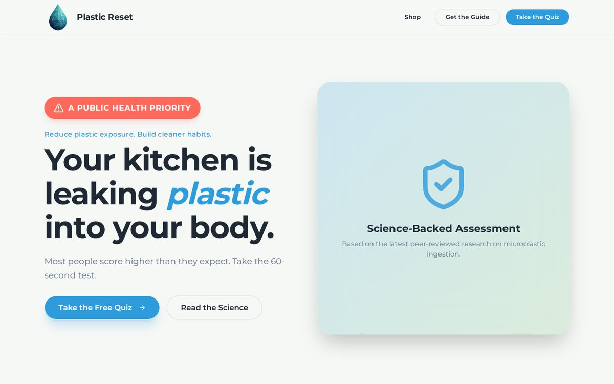

← All projects
Plastic Reset
A quiz that gives people a personal microplastic exposure score, then points them to the swaps that lower it.
- Role
- Solo: brand, design, build
- Status
- Live
- Platform
- Web + iOS/Android

Homepage: the hook is a 60-second test, not a lecture.
The challenge
Most people know microplastics exist, but they have no idea what their own exposure looks like and no reason to change anything. A personal, concrete number does.
What I built
I built Plastic Reset end to end, from the brand to four connected apps: a marketing homepage, a web quiz, a React Native mobile app and an API.
The Microplastic Exposure Score quiz gives each person a 0–100 score across 7 categories and a shareable score card. Their highest-risk areas route them to specific swaps in the shop, and an email-gated 7-Day Guide feeds an email sequence.
Results
- Live at theplasticreset.com. Real users take the quiz and share their scores.
- Personalized commerce: every product is matched to a quiz category, so results point to specific items.
- Privacy and security from the start: consent-first analytics, verified email sign-ups and a written threat model.
Built with
- React + Vite
- Expo (React Native)
- Express 5
- PostgreSQL + Drizzle
- OpenAPI codegen
- Zod
- Brevo
- Cloudflare Turnstile
- Canva
Features 21 total
Quiz + scoring
- 12 plain-language questions, 7 exposure categories (drinking, cooking, food storage, clothing, personal care, air, cleaning)
- Weighted 0–100 score with 4 risk bands (Low / Moderate / High / Critical) and each person's top exposure sources
- Bot-resistant quiz sessions (Cloudflare Turnstile), loaded only with consent
- Shareable result pages with auto-generated social preview images, a downloadable score card, and X / Facebook / WhatsApp sharing
- Companion React Native (Expo) mobile app with its own consent banner
Commerce
- Curated shop of low-plastic swaps; each product is tagged to a quiz category so results link to the right items
- Category filter chips (Air, Food Storage, Kitchen, Water)
- Product images downloaded and served from the site itself, never hotlinked (keeps affiliate links compliant)
- Catalog sync: editing the product list automatically updates the database on the next request
Email + lead generation
- Email-gated 7-Day Plastic Reset Guide (designed eBook), with the PDF served only through a gated, no-index endpoint
- Double opt-in built in-house: signed 24-hour tokens stored only as hashes, and a confirmation page email scanners can't trigger
- Signed, verified profile claims (name, score, risk band) sent to the Brevo list only after confirmation
- Retry-safe: a failed send or enrollment is never reported as a success
Content + reliability
- Homepage news strip: the 6 newest microplastics stories, refreshed hourly from Google News
- Resolves Google News redirect links to the real publisher articles and pulls each article's image
- Falls back to publisher RSS feeds, plus a Postgres cache so a cold start still shows content
- Image proxy with type and size checks, an in-memory cache and branded placeholders
Privacy, security + brand
- Consent-first: no analytics or bot checks before the visitor agrees; declining is honored everywhere
- Written threat model covering spoofing, tampering, data leaks, abuse and admin access
- Admin-only reporting and catalog routes, a tight Content Security Policy, and log redaction
- Full brand kit: faceted water-drop mark, color tokens, Montserrat type, voice rules, and colors for each risk band